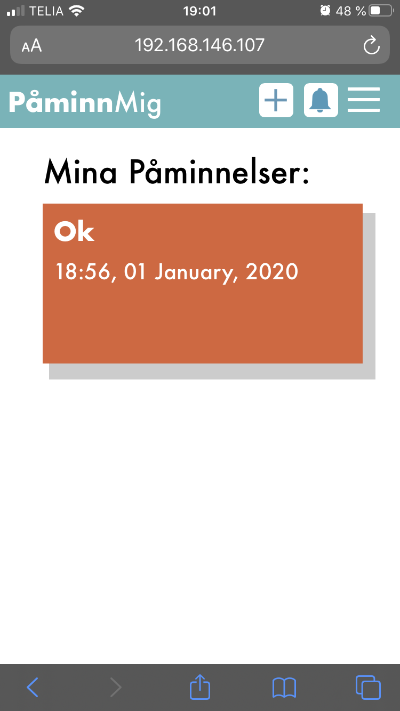

Jag var bra på att bortse detaljerna som gjorde hemsidan lite mer proffsig. T.ex. missade jag alt länken till bilderna och att använda class istället för id. Jag fokuserade mer på utseendet.
Jag ska alltid sätta en alt-länk på mina bilder och jag ska använda class istället för id. Jag måste också komprimera mina bilder innan jag använder dem.
Jag vill lära mig mer om programmering, och eftersom jag ska välja todo-list sidan så kommer jag kunna utveckla mig inom det. Dock, eftersom jag inte är jättebra på JS kan det lätt gå fel. De specifikationer som finns måste ju uppfyllas, vilket kan göra att jag måste göra saker jag kanske inte tycker passar så bra med sidan.
Jag tror att mina kunskaper inom grafisk design och gränsnittsdesign kommer kunna hjälpa mig skapa en sida som är lättanvänd och fin, vilket jag gillar att göra.
Att inte göra allt för komplicerat tror jag. Jag måste ta reda på vad som ska finnas med och inte göra uppgiften svårare än vad den behöver vara.
Jag vill göra en todo list i stil av Trello. Min målgrupp är ungdomar i skolålder som känner att de har mycket att göra och vill kunna ha en sida där de kan hålla koll på allt.
Jag hade ingen handskiss utan "skissade" i figma direkt eftersom jag hade en mycket tydlig bild med en gång om hur jag ville att hemsidan skulle se ut. Jag tänker inte heller använda grid i detta projekt utan uttnyttjar istället nav, header, etc. Det känns bäst för mig, dock kan jag förstå hur det möjligtvis inte är lika proffsigt. Jag använder mest div:ar, men utnyttjatr även forms och olika sorters inputs för mitt formulär där användaren ska skriva. Allting ligger dock i olika div:ar.
| Vecka | På lektionen | Utanför lektionen |
|---|---|---|
| 4 | INPUT-reflektion, research, skisser. | - |
| 5 | Prototyp i Figma, ytterlig planering och bearbetning. | - |
| 6 | Börja bygga html och CSS för en av sidorna utifrån Figma-prototyp. | - |
| 7 | Ingen lektion. | Beroende på hur jag ligger till arbetar jag kanske lite hemma. |
| 8 | Fortsätt färdigställa html och CSS. | - |
| 9 | Fortsätt färdigställa html och CSS, kanke arbeta med JS för första sidan. | - |
| 10 | Jobba med resten av sidorna utifrån tidigare html, CSS och JS, alla sidor kommer vara ganska lika. | Hemma ska jag arbeta med JavaScript och försöka fixa så att man faktiskt kan skapa en tavla. |
| 11 | Fortsätt jobba! :) | - |
| 12 | Finslip. | - |
Jag testade min sida i Chrome, Firefox samt Safari, där min huvudfunktion (att kunna skapa en låda där en viss tid och dag samt en titel ska skrivas ut) fungerade i två utav tre. Av någon anledning fungerade den inte i Firefox, och jag har ingen aning varför detta är. Jag var tvungen att utnyttja @media screen i min CSS så att sidan skulle se bra ut både på mobil och dator. Detta fungerade mycket bra tyckte jag, och sidan ser bra ut i båda. Det som jag tyckte blev lite konstigt var de mellantingen mellan mobil och dator, exempelvis när man i datorn gör fönstret så smalt som möjligt såg hemsidan säkerligen konstig ut, och jag funderar på om det har med @media screen och om jag borde ha gjort ytterligare en för just det mellantinget. Men jag vet inte. Jag behövde inte anpassa min kod (vad jag vet) för de olika webbläsarna, det fungerade ungefär lika bra i både Chrome och Safari, och menyerna fungerade i Firefox. Jag har inte riktigt använt Firefox innan, och jag använde den inte under projektets gång, så jag vet inte om den kräver en annan uppbyggnad på koden eller om den inte stödjer några av de element jag använt. Jag har använt vit text på turkos/orange bakgrund, och detta var tyvärr inte godkänt av contrastchecker. Jag tror jag borde ha testat det innan, men jag var nog ganska självsäker i mina val. Annars använder jag svart text på vit bakgrund, och detta var såklart godkänt. Turkos och orange är motsatta färger och ser därför bra ut tillsammans.
Hur hemsidan ser ut på mobilen(ovan).
Min bild inför detta projekt var att jag skulle visa mina kunskaper och det jag har lärt mig än så länge. Tyvärr gick det inte riktigt som jag hade tänkt. När denna uppgift beskrevs visste jag bara att jag inte ville göra något som jag redan hade gjort, alltså en hemsida som den jag hade gjort i gränssnitt eller i rovdjurs-uppgiften. Jag såg som exempel på hemsidor att det stod en påminnelse-hemsida, som Trello.com. Jag sökte upp Trello och kände att det skulle vara ett jättebra projekt för mig. Jag kunde skapa en ren och modern hemsida med mina kunskaper inom HTML och CSS och samtidigt lära mig en massa nytt i JS. Jag är definitivt en person som tycker om att ta på mig utmaningar, men i detta fall tror jag att jag tog mig vatten över huvudet. När jag insåg hur komplicerad JS-koden behövde vara för att jag skulle kunna ha med de funktioner jag ville var det tyvärr försent att börja om. De funktioner jag ville ha var att man 1. kan skapa en ruta och skriva in en titel, tid och datum för något man vill påminnas om (detta klarade jag faktiskt) och 2. att det ska sparas, vilket jag inte kunde få att fungera. Jag tog hjälp från många olika håll (tutorials, mina föräldrar etc.), men det hjälpte inte. Något jag tycker är ganska roligt var att jag skrev i min INPUT-reflektion att jag inte ville göra denna uppgift för svår för mig själv, det gick ju inte särsklit bra. En tredje sak jag ville var att sidan skulle kunna skicka notiser, vilket jag tänkte fortsätta med som ett projekt i TP, så det är inte helt över än på det hållet. Tyvärr blev det alltså inte som jag tänkte, och jag tror om jag bara hade gjort en annan slags hemsida hade det blivit mycket bättre. Jag fokuserade väldigt mycket på JS i detta projekt.
Något som jag faktiskt var glad över var hur mycket jag lärde mig från detta. Jag kan faktiskt nästan läsa och förstå JS kod, och jag har lärt mig extremt mycket mer om alla de olika elementen och funktionerna den har. Jag känner defintivt att jag förstår HTML, CSS och JS och hur de samspelar mycket bättre. Å ena sidan känns det alltså väldigt bra, men å andra sidan uppnådde jag inte riktigt den nivån jag ville uppnå med resten av hemsidan. Vissa kravspecifikationer är tyvärr inte uppnådda eftersom jag inte riktigt visste vad jag kunde lägga till mer än en hjälpsida och inställningar. Jag tror att om jag t.ex. hade gjort ett portfolio så kunde jag ha varit mer kreativ med de sakerna. Eftersom jag lade så mycket tid på JS hade jag inte tid med att jobba med ytterligare grafik som jag tänkte ha, t.ex. en elefant som skulle fungera som en slags maskot, för att göra sidan mer intressant. Tillslut blev jag tyvärr inte nöjd med mitt projekt, jag tycker om vissa element, men i sin helhet tycker jag den kunde ha blivit så mycket bättre. Jag tänker fortsätta att arbeta med JS:en i tillämpad programmering, specifikt notis-delen, men i detta ämne är detta allt jag kunde åstadkomma. I nästa projekt (om det blir ett?) tänker jag definitivt inte göra det alltför svårt för mig själv, även om jag vet att jag antagligen kommer göra det.
(Alla mina olika försök med IndexedDB i JS finns i tidigare pushar till GitHub, slutprodukten är väldigt simpel.)